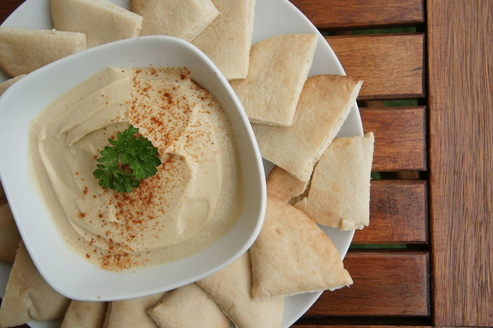

Hummus

Description
Hummus is a dip that I love to make when my parents come to visit me in Virginia. They are vegetarians, and it's great to have something that goes well with red bell peppers, pita chips, and whatever else you can think of to dip in it.
I have been making hummus for the past several years, but have really come to love the recipes that achieve a smooth and creamy consistency. I have found even more success in boiling canned chickpeas than when I make chickpeas fresh from dry beans, perhaps due to my impatience. This recipe takes about an hour with cleanup, so I like to make a big batch that will last a while.
Ingredients
- 2 cans (15 ounces) canned chickpeas
- 1 teaspoon baking soda
- 1/2 cup lemon juice
- 2 medium cloves of garlic
- 1 teaspoon kosher salt
- 1 cup tahini
- 3-6 tablespoons ice water, add one at a time
- 1 teaspoon ground cumin
Steps
- Place the chickpeas in a medium-sized pot and add the baking soda. Cover the chickpeas with water, then boil over high heat. Continue boiling for about 20 minutes, adding water if needed to prevent the chickpeas from ever being out of the water. By the end of the boiling period, the skin of the chickpeas should be falling off, and they should be soft enough for a fork to be inserted easily.
- Drain the chickpeas in a fine-mesh strainer and run cool water over them for 30 seconds. Set aside for now.
- In a food processor, combine the lemon juice, garlic, and salt. Process until the garlic is very finely chopped.
- Add the tahini to the food processor and blend until thick and creamy.
- Drizzle in the ice water slowly, one tablespoon at a time. Keep blending until the mixture is smooth, and a bit paler and less viscous. Don't add too much water, or your hummus will be runny. Add just enough to get it all smooth and consistent, a bit thicker than heavy cream.
- Add the cumin and the chickpeas to the food processor. Blend until the mixture is smooth, about 2 minutes. Add more water by the tablespoon if needed.
- Taste and adjust the salt and lemon juice as needed.